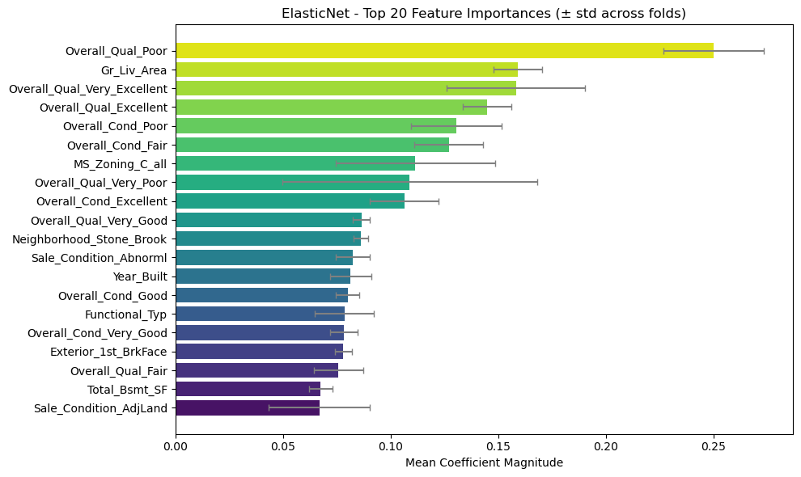
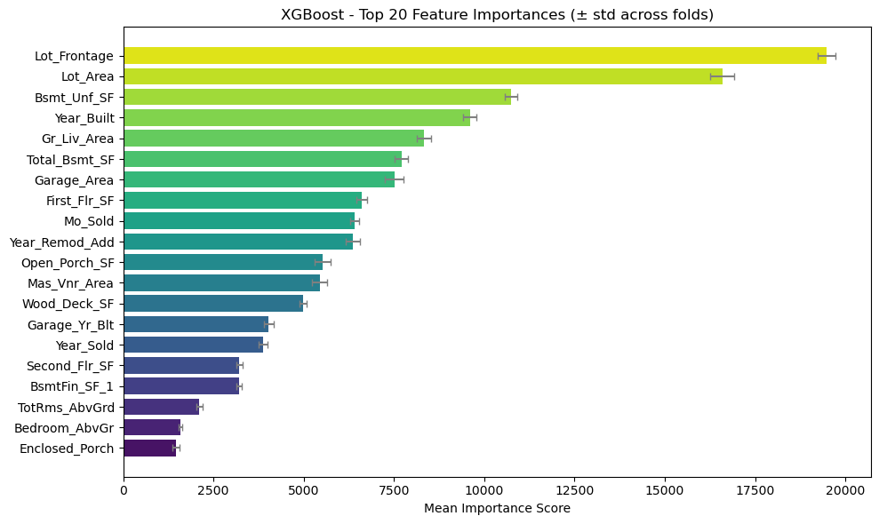

Predicting House Prices in Ames, Iowa
This project predicts home sale prices using linear (ElasticNet) and non-linear (XGBoost) regression models trained on over 80 features. It incorporates robust preprocessing, feature engineering, and model tuning to achieve strong predictive accuracy.
Data Exploration
I began by exploring the relationship between predictors and the response (home sale prices) to guide feature transformations and model selection. To get a feel for the data, I examined scatter plots, counted null values, and examined distributions of categorical and numerical variables. The interactive charts below highlight some of the more apparent patterns, such as the strong log-linear relationship between living area and sale price, and the ordinal impact of overall quality.
Correlation of Top 10 Features
Distribution of Log(Sale Price)
Log(Sale Price) by Overall Quality
Log(Sale Price) vs Living Area
Data Preprocessing
- Removed 11 low-utility columns. These were either redundant or mostly null values.
- Filled missing values in
Garage_Yr_Bltwith 0 to preserve numeric format. - Winsorized 15+ numerical features at the 95th percentile to reduce outlier influence.
- Identified categorical features and applied full one-hot encoding (K dummies per column, no level dropping).
- Standardized numerical features using
RobustScalerfor stability against outliers. - Log-transformed
Sale_Priceto normalize its distribution and align with RMSE evaluation.
Model Tuning
- For ElasticNet, performed a grid search on
alphaandl1_ratiobased on initial exploration, then usedElasticNetCVfor cross-validation. - Applied
RobustScalerto inputs before fitting the linear model. - For XGBoost, used parameters inspired by community benchmarks:
n_estimators=5000,max_depth=6,eta=0.01, andsubsample=0.5. - XGBoost performed well without further tuning due to the robustness of tree-based methods to raw feature scale.
Evaluation
- Used Root Mean Squared Error (RMSE) on the natural log of sale price for all model evaluations.
- Validated both models using 10 distinct train/test splits, reporting scores separately for each fold.
- Both models were below 0.125 RMSE for the first 5 folds and below 0.135 for last 5.
- XGBoost consistently outperformed ElasticNet, capturing non-linear relationships in the data.
Mean RMSE Scores:
- ElasticNet: 0.121
- XGBoost: 0.119

Top ElasticNet Features

Top XGBoost Features
Above are the most influential features for each model, aggregated across all folds. The linear ElasticNet model strongly emphasizes features we identified early in our data exploration, particularly living area and overall quality. In contrast, XGBoost appears to deprioritize the Overall_Qual categories entirely. Interestingly, only three features appear in the top 20 for both models: Year_Built, Gr_Liv_Area, and Total_Bsmt_SF. This aligns with our intuition that these features are key predictors of sale price, but also highlights the different ways linear and non-linear models can interpret feature importance.